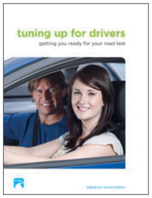

використання цього посібника
Цей посібник призначений для:
- нових водіїв
- досвідчених водіїв, які:
– щойно переїхали до Британської Колумбії
– проходять повторне складання тестів
– освіжають свої навички водіння.
Тут міститься базова інформація, яку вам потрібно знати, щоб керувати безпечно. Він також допоможе вам підготуватися до тесту на знання та дорожніх тестів Class 7 і Class 5. Для вашої зручності ви також можете завантажити онлайн-версію цього довідника або отримати застосунок на icbc.com.
Нові водії
Нові водії мають вищий ризик аварії. Цей посібник містить стратегії водіння, які допоможуть вам бути в безпеці.
Коли ви отримаєте посвідчення Class 7L, вам видадуть примірник Tuning up for drivers. Це покроковий посібник, який допомагає відпрацьовувати навички водіння. Користуйтеся цим посібником разом із Tuning up for drivers, щоб вивчити або повторити стратегії безпечного водіння.

Досвідчені водії
Скористайтеся цим посібником, щоб повторити правила та норми водіння в B.C., якщо ви мали посвідчення водія в іншій юрисдикції, якщо ви проходите повторне складання тестів або якщо хочете освіжити свої навички. Цей посібник також містить інформацію про практики безпечного водіння. Користуйтеся ним разом із Tuning up for drivers, щоб підготуватися до дорожніх тестів.
Як отримати максимум від цього посібника
Цей посібник поділено на 10 розділів. Залежно від того, що вам потрібно знати, і від того, чи ви новий, чи досвідчений водій, ви можете вирішити прочитати й вивчити його повністю або лише окремі частини.
Структура
Кожен із 10 розділів дає вам корисну інформацію, яка допоможе стати безпечним, компетентним водієм. Розділи впорядковано так, щоб ви спершу вивчили основи (розвиток навичок розумного водіння), а потім застосували вивчене (застосування навичок розумного водіння). Цей посібник створено, щоб ви швидко знаходили потрібну інформацію. Повний перелік тем шукайте у змісті та алфавітному покажчику.
Розділи 1–5: розвиток навичок розумного водіння
Перші п’ять розділів цього посібника охоплюють основи й покликані допомогти вам розвинути навички розумного водіння. Вони містять важливу інформацію про водіння, яка допоможе зберегти безпеку вас та інших на дорозі.
- Розділ 1, ви за кермом, розповідає про поширені рішення, які ухвалює кожен водій.
- Розділ 2, ви і ваш транспортний засіб, оглядово описує роботу вашого транспортного засобу й догляд за ним.
- Розділ 3, знаки, сигнали та дорожня розмітка, містить інформацію про знаки, сигнали та дорожню розмітку, які ви бачитимете під час водіння.
- Розділ 4, правила дорожнього руху, розповідає про правила, які потрібно знати, щоб керувати безпечно.
- Розділ 5, дивись – думай – дій, навчає вас стратегії водіння, яка допоможе стати компетентним і уникати проблем на дорозі.
Розділи 6–8: застосування навичок розумного водіння
Розділи 6–8 допоможуть вам застосувати базову інформацію з перших п’яти розділів.
- Розділ 6, спільне користування дорогою, показує, як безпечно користуватися дорогою разом з усіма її учасниками.
- Розділ 7, особисті стратегії, дає вам підказки, як подолати негативні впливи, що можуть відбиватися на вашому водінні.
- Розділ 8, стратегії в надзвичайних ситуаціях, описує складні умови водіння та дає стратегії, як з ними впоратися.
Розділи 9 і 10: довідкові матеріали та ресурси
Останні два розділи розповідають, як отримати та зберегти посвідчення водія і де знайти додаткову інформацію. Ці розділи призначені лише для довідки. Вас не тестуватимуть за цим матеріалом.
- Розділ 9, ваше посвідчення водія, описує кроки, які потрібно зробити, щоб отримати посвідчення водія.
- Розділ 10, потрібно знати більше?, перелічує, куди звертатися за додатковою інформацією.
Елементи оформлення
Цей посібник створено так, щоб ним було легко користуватися. Різні види інформації розміщено в різних місцях сторінки. Якщо ви розумієте, який тип інформації знайдете в кожному місці, ви користуватиметеся посібником найефективніше. Нижче наведено дві зразкові сторінки з елементами, які ви побачите на бічній панелі з лівого боку сторінки.
Бічна панель
Основна колонка
Основна колонка
Більшість інформації кожного розділу міститься в основній колонці праворуч на кожній сторінці. Ця основна колонка також містить:
- малюнки, які ілюструють певні положення чи ідеї
- сценарії під назвою уявіть себе за кермом, які дають вам змогу подумати, що ви зробили б у певній дорожній ситуації
- стратегії, які допоможуть вам справлятися зі звичайними та надзвичайними ситуаціями за кермом.
Бічна панель
Уздовж лівого краю сторінки ви знайдете таку інформацію:
у цьому розділі — перелік на початку кожного розділу, який показує, що входить до розділу
факт про аварії — факти та статистика про аварії
порада щодо водіння — практичні підказки, які допоможуть вам залишатися в безпеці на дорозі
попередження — важлива інформація про безпеку
подумайте — питання, які пропонують вам поміркувати над вашими рішеннями за кермом
швидкий факт — важливі факти з дотичних тем.